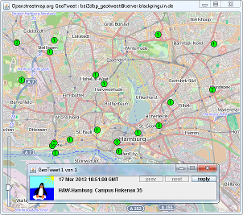

GeoTweet is an Java application that was created in the summer semester 2011 at the Databases course of B.Sc. Applied Computer Science (B-AI).
The task was to develop an application that makes use of a database with location data. Inspired by Twitter's geotagging feature, a tool was created to mark locations on an OpenStreetMap map with short messages (tweets) and to reply to messages from other users.
I still use GeoTweet for myself regulary to mark places I've been.
GeoTweet can't be released, because security[1]The application requires read and write access to the database which contains passwords in plaintext. and privacy[2]Because I'm the only one with access to the database, I do save names, addresses, dates of birth, e-mail-addresses and phone numbers of other people at their current (or former) residence. issues weren't considered during its development.
| Languages | Java, SQL |
|---|---|
| Technologies | Swing, JDBC, MySQL |
| IDE | Netbeans |
| Participants | 1 |

{kind=link}